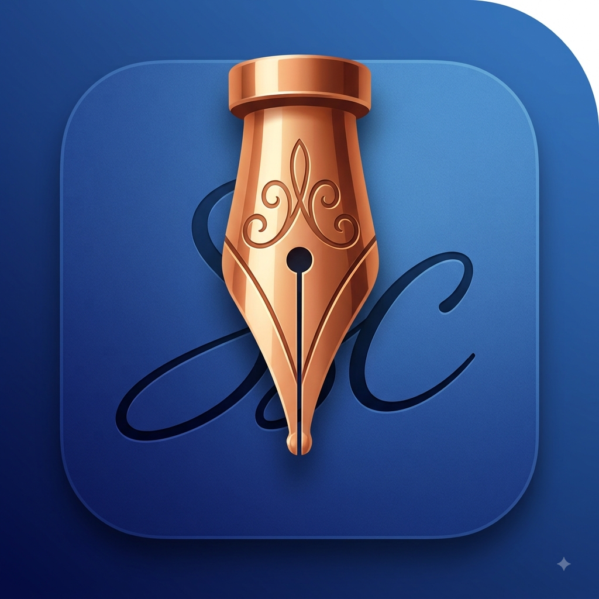

For iPhone · iOS 18 or later
Signature Scanner
& Creator
Turn your handwritten signature into a clean, reusable signature. Add it to a PDF and export a signed copy, right from your iPhone.
Download on the App StoreFree to download · Optional one-time purchases

From paper to signed PDF.
- 01 · Create
Capture your signature.
Photograph your signature, import a photo, or type one. Save separate initials when your paperwork needs them.
- 02 · Place
Make it fit.
Open your PDF, add a saved signature, and adjust its size and position on the page.
- 03 · Export
Send a signed copy.
Export a new PDF and share it through your iPhone. Your original document stays intact.
Try a complete signing workflow.
New users get 2 free saved signatures and 1 free document export per device. Enough space for your signature and initials, with no watermark on your export.
Existing users keep their original 3-signature, 3-export allowance. Free uses do not renew, and re-exporting the same saved document stays free.
One Use Credit
One additional document export or one saved signature after the relevant free allowance is used. Credits never expire and stay on the purchasing device.
Unlock Forever
Unlimited signatures and document exports for one payment. Restore lifetime ownership on your devices using the same Apple Account.
Prices are shown in the app before purchase. No automatically renewing subscriptions. Read about allowances and purchases.
Your documents stay yours.
Your signatures and PDFs are processed on your device and are not uploaded to Lean Orbit. No app account, ads, or tracking. You choose where to share your files; Apple handles purchases and any device backups you enable.